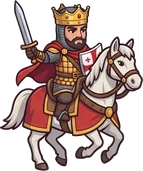
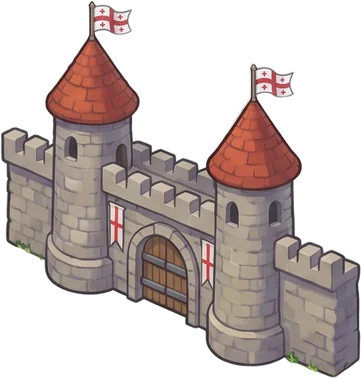
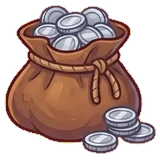
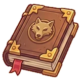

აირჩიე სამყარო, გმირი და ითამაშე მეგობრებთან
სამყარო

შენი გმირი
ონლაინ ოთახები თამაშის საიტზე მუშაობს: qourum.github.io/mamuli. აქ ბოტებთან ან ერთ ეკრანზე ითამაშებ.
ჩამოტვირთვის მომზადება…
მთავარ ეკრანზე დაჯდება და აპივით გაიხსნება, ბრაუზერის ზოლების გარეშე.


